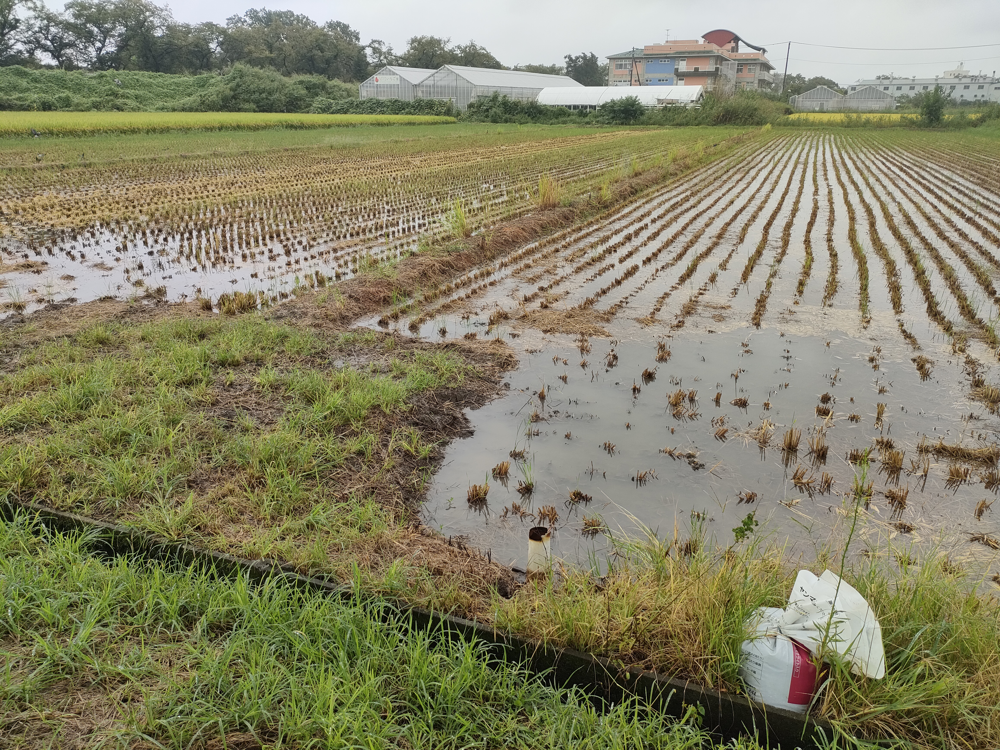
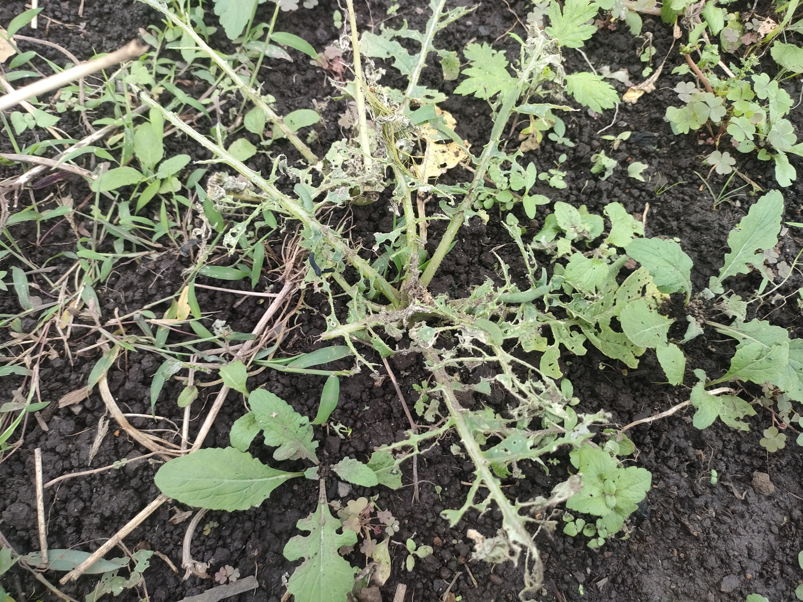
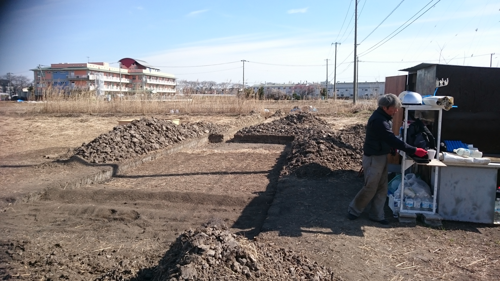

クライメートフレーション
今まで通りはズレていくか？
「野菜が高い」の向こうと、昨今の空模様...
長雨で畑に入れず、撮りたい写真も予定通りには撮れませんでした。こういう小さなズレも、畑では先に始まっています。
おさんぽ便り
8月号では「フードマイレージ」の話をしました。食べ物は、どこから来るのか。
9月号では「旬レス」の話をしました。食べ物はいつ採れるのかでした。
そして今月は、もう一歩これからの畑事情を探ってみたいと思います。
食べ物は、これからも今まで通り、予定通りに採れるのだろうか？
そんな話です。
去年の大根
昨年、8月中に大根を3回蒔き直した。
発芽まではする。
でも、その後の暑さに耐えられず、消えてしまう...
ネーさんの畑でも、同じように何度も蒔き直したと聞いていたが、結局は例年より時期を遅らせないと育ちませんでした。
「もう一回だけ蒔いてみるか」
そんなことを何度か繰り返して、オラ的に分かってきたかもな事。
少なくともオラの畑では、今までと同じ時期に蒔けばよい、とは言い切れなくなってきた。
そして、2026年、今年の9月は、例年にない長雨でした。
畑には、ほとんど入れず、日照不足で育ちも悪い。
暑さで蒔き直したと思ったら、今度は又雨で作業が進まない。
ようやく発芽したと思ったら、虫の餌食...
畑は、ひとつ予定がズレると、その後ろの予定まで少しずつズレていきます。
1 / 5
天候が値札に届くまで
これは、ただ大根が失敗したという話だけではありません。
猛暑、干ばつ、大雨などの気象条件が農作物の生育に影響し、その結果として食料価格の上昇につながる現象を「クライメートフレーション」と呼ぶことがあります。
日本語にするなら、「気候による物価上昇」という感じでしょうか。
難しい言葉ですが、要するに、天候の変化が畑に影響し、それが少し遅れて値札にも出てくるという話です。
値札だけ見ていると、なかなか見えにくい話でもあります。
もちろん、大根を蒔き直したことそのものが、すぐにクライメートフレーションというわけではありません。
野菜の値段は、天候だけで決まるものでもありません。
輸送費、肥料、燃料、人件費、作る人の数、売り場の都合、需要と供給。いろいろなものが重なって、ようやく値札に表れる。
既に畑で始まっている予兆
発芽しても育たない。
蒔き直す。
種も手間も時間も余計にかかる。
播種の時期が後ろや前にずれる。
結果収穫の時期もずれる。
でも、同じようなことが広い地域で同時に起きれば、供給にも響いてきます。そして、やがて価格にも表れてくることになるでしょう。
値札と価値
ネ～さんと話をしたり、聞いたりしていると、「大根が高い」「キャベツが高い」「今年は野菜が高い」とか、そういう話を聞きます。
「だから農家さんは大変ね！」オラも本当にそう思います。
でも、畑に立っていると、その値段のずっと手前にある事が見えてきます。
2 / 5
環境変化による価格
発芽した小さな芽が、暑さや長雨で消えていく。
もう一度、土をならしてもう一度、種を蒔く。
今度こそ育つか、毎朝見に行く。
おさんぽマルシェは自然に則った露地栽培ですが
露地の旬とは違う時期に安定して出荷しようとすれば、温度管理など別のコストも必要になります。
たとえば寒い時期のハウス栽培では、暖房に使う燃料費もかかります。
値札が上がった時に、突然何かが起こったわけではない。
実はその何か月も前から、畑では人間が天気に合わせて試行錯誤しています。
野菜の値段は、畑では先に始まっています。
今まで通りがズレていく
農には、昔から「この時期に蒔く」「この頃に植える」「この季節に採れる」という目安がありました。
もちろん、その年の天気によって多少のズレはあると思います。
でも最近は、そのズレが「多少」では済まなくなってきているように感じます。
暑すぎる。雨が降らなさすぎる。降ったと思ったら、一気に降りすぎる。
畑の都合というより、空の都合に振り回される時間が増えてきました。
天気が変われば、畑が変わる。畑が変われば、やがて値段にも影響する。
オラの力不足なのかもしれませんが、
「いつでも同じように野菜が採れる」という安心は、
これから少し疑って見た方がいいかもしれません。
季節のお野菜
大根
大根は、冬の食卓に欠かせない野菜です。おでん、煮物、大根おろし、漬物。
寒さに当たる時期の大根は、甘みを感じやすくなることがあります。
でも、その冬の大根は、冬になってから急に始まるわけではありません。
まだ暑さの残る頃に種を蒔き、発芽を待ち、虫や暑さや雨を見ながら育てていきます。

虫に食われてしまった大根。冬の一本になる前に、畑ではこういう出来事も起きています。
冬に食べる一本の大根の向こうには、夏の終わりから秋にかけての空模様があります。
3 / 5
野食育の記録写真
開墾途中の畑。土の区画、道具置き場、人の姿。予定通りにいかない場所で、少しずつ畑になっていく頃。

開墾地では簡単にいかない
畑を始める前は、種を蒔けば野菜は育つものだと思っていたオラ。
もちろん、条件が良い場所や、すでに整えられたシェア農園なら話は別です。
でも、オラんとこみたいな田んぼからの開墾地では、そんな簡単にはいきませんでした。
土壌を知らない。土が合わない。水が溢れる。水没する。夏場は水が足りない。草ボーボージャングルに負ける。虫が野菜を食べ放題。
そして何より、天気はオラのスケジュール通りには来てくれません。
自然の側へ合わせる
畑で実感した一番大きなことは、予定通りにいかないものと付き合うことでした。
そして、うまくいかなかった時に、すぐ答えが出るわけでもありませんでした。
なんせ開墾当初は、うまくいく以前の問題が山積みです。
ちょっとずつ改善しては、大きくぶち壊される...その繰り返し...
今回の大根の話も、まさにそうかもしれません。
時期をずらす。場所を変える。去年の記憶を引っ張り出す。ジジババの経験を聞く。
そして自分で決断する事。
そうやって、人間の予定を少しずつ自然の側へ合わせていくしかありませんでした。
4 / 5
何を持ち帰ったか？
その繰り返しの中、ただ「失敗した」で終わらないものが残っていきます。
オラが野食育で大事にしたいのは、ここです。
体験とは、何かをやったことだけではなく、そこから次の問いが生まれること。
農に触れる入口は、人それぞれです。
直売所で野菜を買う。畑に来て手を動かす。収穫体験のように、採ることを楽しむ。
どれも、農に触れる大事な入口です。
「なぜ？」を持ち帰る
買った野菜を食べながら、「これはなぜ今の時期なんだろう」と思うこともあるだろうし。
草を刈りながら、「なぜこんなに草が伸びるんだろう」と思うこともある。
収穫しながら、「ここまで育つまでに、どれだけ手がかかったんだろう」と思うこともあるかもしれません。
どんな入口からでも、そこでひとつ「なぜ？」が残るかもしれない。
野食育として本当に大事にしたいのは、その「なぜ？」です。
そんな問いまで持ち帰れたら、普段の買い物や食事の見え方も、少し変わります。
畑から持ち帰るのは、野菜だけじゃなくていい。
ひとつの「なぜ？」を持ち帰ってもらえたら、その体験は、きっとそこで終わらない。
オラにとっての野食育は、たぶん、そういうものです。
お知らせ&お願い
毎週日曜日、朝7時ごろから直売所を開いています。
雨天の場合は中止です。今月もよろしくお願いいたします。
場所が少しわかりづらい直売所なので、Google Map に口コミを書いてもらえると助かります。
気が向いたらで大丈夫です。
Google Map に口コミを書く
5 / 5